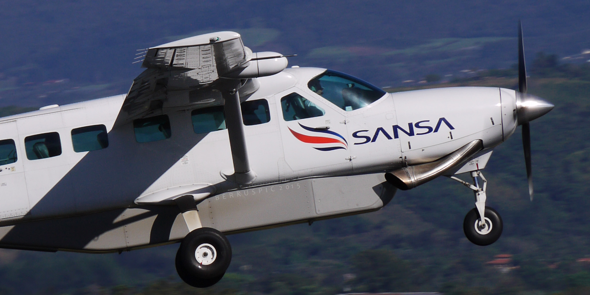

About Us
Fly to the Limit is an airline offering adventure flights, transport and sight seeing based in the scenic capital of New Zealand and therefore the world. Operating out of Queenstown and Wanaka, FTTL offer tourists a range of scenic flights in both fixed wing and helicopters as well as high adventure in a stunt plane, or the most peaceful flight experience possible in a glider high above the mountains. We specialize in one off charters, and delivery and pickup for trampers, also providing a provisioning service for fresh supplies during long excursions.